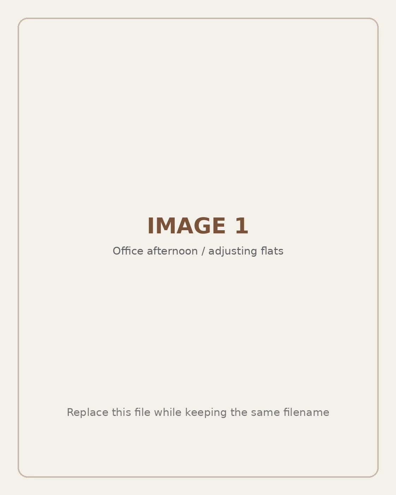
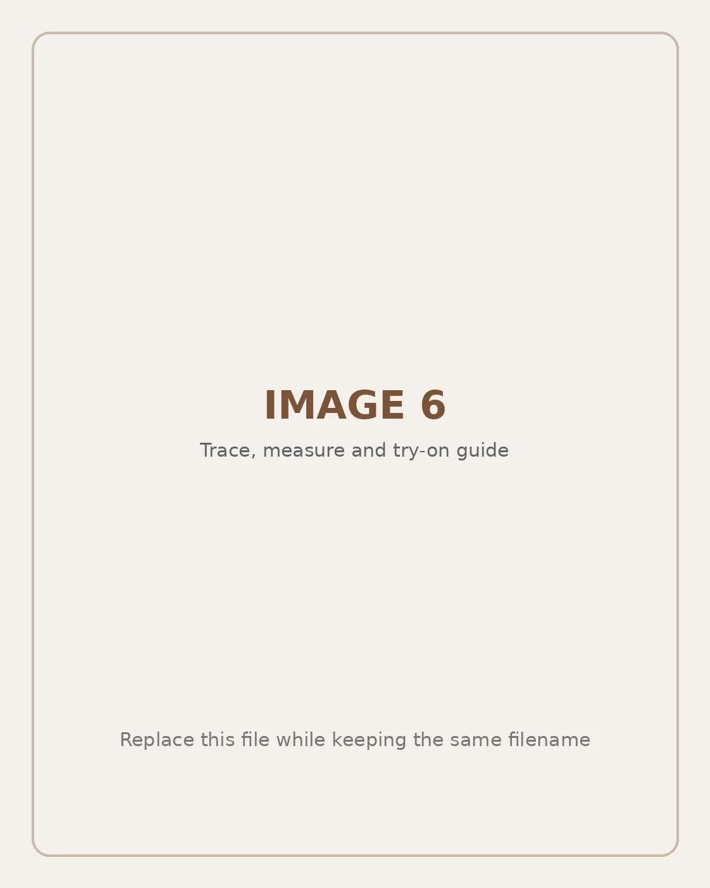

Everyday Footwear Guide
Why Do Shoes Feel Tighter in the Afternoon?
Why do shoes feel tighter in the afternoon when they seemed perfectly comfortable in the morning? In many cases, the shoes have not changed—your feet have become slightly fuller after hours of sitting, standing, walking or warm weather. Understanding this everyday change can help you choose a more comfortable fit for work, travel and daily life.

Why Do Feet Feel Larger Later in the Day?
A common reason shoes feel snug later in the day is mild swelling in the feet and ankles. This type of swelling is often called oedema in British English and edema in American English. It happens when fluid collects in body tissues.
The feet and ankles are especially likely to feel fuller because they remain below the rest of the body while you sit or stand. Long periods in one position can make this more noticeable. Warm weather, long journeys and extended time on your feet may also contribute to a temporary change in fit.
The difference may be small enough that you cannot see obvious swelling. Instead, you may notice pressure across the toes, forefoot or instep, a strap that feels tighter, or a heel edge that begins to rub.
What Can Make Afternoon Tightness More Noticeable?
Long periods of standing
Standing for several hours allows gravity to encourage fluid toward the lower legs and feet. At the same time, your feet are carrying body weight for longer, so a shoe that already fits closely may begin to feel restrictive.
Long periods of sitting
Sitting may feel less demanding, but remaining still for a long time can also contribute to lower-leg and foot swelling. This is common during office work, car journeys, train travel and flights. Short movement breaks and gentle ankle movements may help you avoid staying in one position for too long.
Warm weather
Some people find that shoes feel snugger in summer or while travelling in a warmer climate. Heat can affect circulation and may make mild swelling more noticeable, particularly in shoes with little extra room.
Walking for several hours
During city sightseeing, shopping or commuting, the forefoot repeatedly spreads and flexes. A stiff shoe may resist that movement, while a close toe box can create increasing pressure around the widest part of the foot.
Why Some Shoes Feel Tighter Than Others
A small change in foot volume can feel much more obvious in a rigid shoe. Stiff materials have limited ability to adapt, while narrow shapes and firm seams can concentrate pressure on specific areas.
Shoes may feel tighter later when they have:
- A narrow or sharply pointed toe box
- A rigid upper with very little flexibility
- Tight straps positioned across the instep
- Firm seams over sensitive areas of the forefoot
- Too little room around the toes
- A heel edge that presses or rubs
- An outsole that does not bend naturally with the foot
This does not mean every structured shoe will be uncomfortable. The correct size, width, shape and intended activity all matter. However, footwear for a long office day or a busy trip should be judged by how it performs over several hours—not only by how it looks during a quick fitting.
What to Look for in Comfortable Everyday Shoes
A comfortable toe area
Your toes should be able to rest naturally without pressing firmly against the front or sides. A softly rounded or gently squared toe can provide usable room while maintaining a clean, versatile appearance.
A soft and flexible upper
A flexible upper can move more naturally with the foot. Soft knitted materials may feel less restrictive across the forefoot and instep than firm materials. The shoe should still fit securely and should not slide excessively while you walk.
Breathable construction
Breathability does not prevent every cause of swelling, but it can improve the wearing experience by helping the feet feel cooler. This can be useful during warm commutes, office days and summer travel.
A flexible but stable outsole
The sole should bend near the area where your foot naturally flexes. It should also feel stable enough for the surface and distance you expect to walk. Very thin flats may be suitable for short indoor wear but less comfortable for hours on hard pavements.
Appropriate cushioning
A cushioned insole can soften the sensation of standing or walking on hard floors. Some styles may also include a removable or contoured insole, but these features should always be checked on the specific product page.
A gentle heel fit
The heel should stay in place without digging into the skin. A soft heel area can help reduce rubbing, but the shoe should not be so loose that the heel repeatedly slips with every step.
Can Knitted Flats Feel More Comfortable in the Afternoon?
Knitted flats may be a practical option for women who prefer a softer alternative to rigid everyday shoes. A breathable knitted upper can move with the foot, while an ultra-stretch construction may accommodate small changes in foot volume more comfortably than a firm upper.
Konhill designs lightweight knitted flats, ballet flats, Mary Jane styles and loafers for women who value comfort and easy styling. Depending on the individual design, a pair may include a breathable knitted upper, soft flexible construction, a lightweight feel, a flexible outsole, cushioning and an easy slip-on shape.
These features do not treat medical swelling. They are intended to provide a softer and more adaptable everyday fit. Neutral knitted flats can also be paired with tailored trousers, jeans, skirts and dresses, making them useful for work, travel and casual occasions.
Explore Konhill women’s flats to compare lightweight styles and choose a shape that suits your wardrobe and daily routine.
Choosing Shoes for Work, Travel and Everyday Walking
For office work
Look for a professional shape with sufficient toe space, a flexible upper and comfortable cushioning. Knitted ballet flats or loafers can pair naturally with tailored trousers, midi skirts and simple dresses. Even during a desk-based day, try to change position and move periodically.
For jobs that involve standing
Choose shoes that balance cushioning, flexibility and a secure fit. Do not simply size up without considering width and shape, because an overly large shoe can create heel movement and friction.
For travel
A travel shoe should be lightweight, easy to put on and versatile enough for several outfits. For flights or long train journeys, avoid excessive pressure across the instep. For sightseeing, consider the pavement, distance and amount of cushioning you will need.
For everyday walking
Test new shoes on shorter routes before wearing them for an entire day. A shoe that is comfortable indoors may feel different on concrete, stone streets or hard office flooring.
Should You Try On Shoes in the Afternoon?
Trying shoes later in the day can give you a more realistic idea of how they will feel after several hours of normal activity. A pair that already feels uncomfortably tight during an afternoon fitting is unlikely to be a reliable all-day choice.
Use this fitting checklist:
- Measure both feet and use the larger measurement.
- Wear the socks, liners or hosiery you expect to use.
- Check that your toes can rest and move naturally.
- Make sure the upper does not create strong pressure across the forefoot or instep.
- Walk on a firm surface for several minutes.
- Check whether the heel slips, rubs or feels pinched.
- Compare your measurements with the brand’s current size chart.
Sizing can vary between brands and shoe constructions. Your usual size is a useful starting point, but it should not replace an actual measurement and a careful fit check.

Practical Ways to Reduce End-of-Day Shoe Discomfort
Change position regularly
Avoid remaining completely still for long periods. Brief walks and gentle ankle movements can help you change position during work or travel.
Elevate your feet while resting
When practical, raising your feet during rest may help with uncomplicated mild swelling. Persistent or unexplained swelling should be discussed with a healthcare professional rather than managed only by changing shoes.
Match the shoe to the activity
A soft office flat may not provide the same protection as a shoe designed for several hours of outdoor walking. Consider the distance, terrain, weather and amount of support you need.
Introduce new shoes gradually
Wear new shoes for shorter periods before relying on them for a full workday or holiday. This makes it easier to identify toe pressure, heel rubbing or an unsuitable shape.
Follow the correct care instructions
Clean knitted shoes according to the product’s care guidance. Avoid harsh chemicals, high heat and machine washing unless the specific style is clearly described as machine washable.
When Should Foot Swelling Be Checked?
Mild swelling after a long day may have a simple explanation, but sudden, painful, persistent or one-sided swelling should not be treated as only a shoe-fitting issue.
Seek medical advice promptly when swelling:
- Appears suddenly or becomes severe
- Affects only one foot or leg without a clear explanation
- Is painful, red or warm
- Does not improve or continues to worsen
- Occurs after an injury or alongside signs of infection
Swelling accompanied by chest pain, difficulty breathing, faintness or coughing blood requires urgent medical attention. Do not stop prescribed medication without speaking to a qualified healthcare professional.
This article provides general footwear and lifestyle information and is not a medical diagnosis or treatment recommendation.
Frequently Asked Questions
Why do my shoes fit in the morning but feel tight later?
Your feet may become slightly fuller after hours of sitting, standing, walking or warm weather. Shoes with a close fit, narrow toe box or rigid upper can make this small change feel more noticeable.
Are knitted flats suitable for work?
Knitted flats can suit many office environments when they have a clean shape, secure fit and appropriate outsole. Their soft uppers may feel less restrictive than rigid materials and can be styled with trousers, skirts and dresses.
Are flat shoes suitable for walking all day?
Some flats are suitable for moderate daily walking, but the design matters. Look for cushioning, a stable flexible outsole, enough toe room and a secure heel. Long distances or uneven terrain may require purpose-built walking shoes.
How do I choose comfortable flats?
Choose a shape with natural toe space, a soft upper, a flexible outsole, suitable cushioning and a heel that stays secure without rubbing. Try both shoes and assess them after walking on a firm surface.
Do knitted shoes stretch?
Knitted uppers are generally more flexible than rigid materials, but the amount of stretch depends on the yarn and construction. The shoe should feel comfortable without becoming loose or unstable, so always follow the style-specific size guide.
How should I clean knitted shoes?
Follow the care instructions for the individual style. For light dirt, use a soft brush or cloth. Avoid strong chemicals, high heat and machine washing unless the manufacturer specifically confirms that the shoes are machine washable.
Should I choose shoes based on my larger foot?
Yes. Measure both feet and use the larger measurement as the main reference. If necessary, the smaller foot may be adjusted with an appropriate insole or heel grip, provided it does not create extra pressure.
Find a More Flexible Fit for Busy Days
Shoes can feel tighter in the afternoon because feet may become slightly fuller throughout the day. Choosing breathable materials, natural toe space, suitable cushioning and a flexible upper can help create a softer everyday wearing experience.
Explore Konhill Women’s Flats